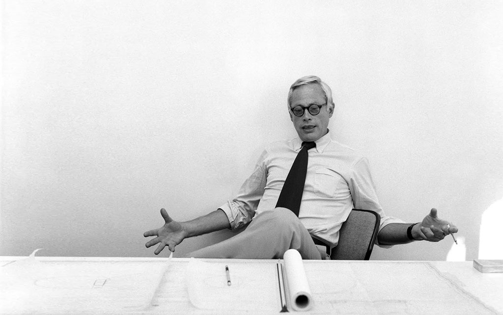

Dieter Rams
Less, but better
Pablo Picasso once said “Good Artists Copy Great Artists Steal” then Steve Jobs mention that in one interview long ago. We all know that Apple products are the best out there, there’s no doubt about it, and the main reason about that is because they have the best design. Jonhathan Ive, the chief industrial designer at Apple is a fantastic designer but it’s always good to know what and who inspired him to come up with the Apple product designs. We might think that they are pretty unique and new but when we look at Dieter Rams the Pablo Picasso’s quote makes even more sense.
Dieter Rams (born May 20, 1932 in Wiesbaden, Hesse) is a German industrial designer closely associated with the consumer products company Braun and the Functionalist school of industrial design.
Rams studied architecture at the Werkkunstschule Wiesbaden as well as learning carpentry from 1943 to 1957. After working for the architect Otto Apel between 1953 and 1955 he joined the electronic devices manufacturer Braun where he became chief of design in 1961, a position he kept until 1995.
Rams once explained his design approach in the phrase “Weniger, aber besser” which freely translates as “Less, but better”. Rams and his staff designed many memorable products for Braun including the famous SK-4 record player and the high-quality ‘D’-series (D45, D46) of 35 mm film slide projectors. He is also known for designing the 606 Universal Shelving System by Vitsœ in 1960.
Dieter’s iconic work
Dieter Rams’ ten principles to good design
-
Good design is innovative
The possibilities for innovation are not, by any means, exhausted. Technological development is always offering new opportunities for innovative design. But innovative design always develops in tandem with innovative technology, and can never be an end in itself.
-
Good design makes a product useful
A product is bought to be used. It has to satisfy certain criteria, not only functional, but also psychological and aesthetic. Good design emphasizes the usefulness of a product whilst disregarding anything that could possibly detract from it.
-
Good design is aesthetic
The aesthetic quality of a product is integral to its usefulness because products are used every day and have an effect on people and their well-being. Only well-executed objects can be beautiful.
-
Good design makes a product understandable
A product is bought to be used. It has to satisfy certain criteria, not only functional, but also psychological and aesthetic. Good design emphasizes the usefulness of a product whilst disregarding anything that could possibly detract from it.
-
Good design is unobtrusive
Products fulfilling a purpose are like tools. They are neither decorative objects nor works of art. Their design should therefore be both neutral and restrained, to leave room for the user's self-expression.
-
Good design is honest
A product is bought to be used. It has to satisfy certain criteria, not only functional, but also psychological and aesthetic. Good design emphasizes the usefulness of a product whilst disregarding anything that could possibly detract from it.
-
Good design is long-lasting
It avoids being fashionable and therefore never appears antiquated. Unlike fashionable design, it lasts many years – even in today’s throwaway society.
-
Good design is thorough down to the last detail
Nothing must be arbitrary or left to chance. Care and accuracy in the design process show respect towards the consumer.
-
Good design is environmentally friendly
Design makes an important contribution to the preservation of the environment. It conserves resources and minimizes physical and visual pollution throughout the lifecycle of the product.
-
Good design is as little design as possible
Less, but better – because it concentrates on the essential aspects, and the products are not burdened with non-essentials. Back to purity, back to simplicity.